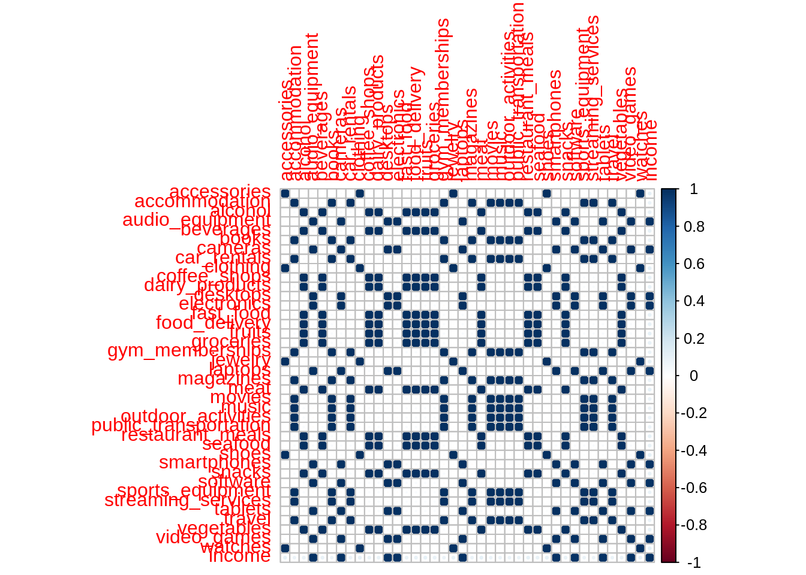
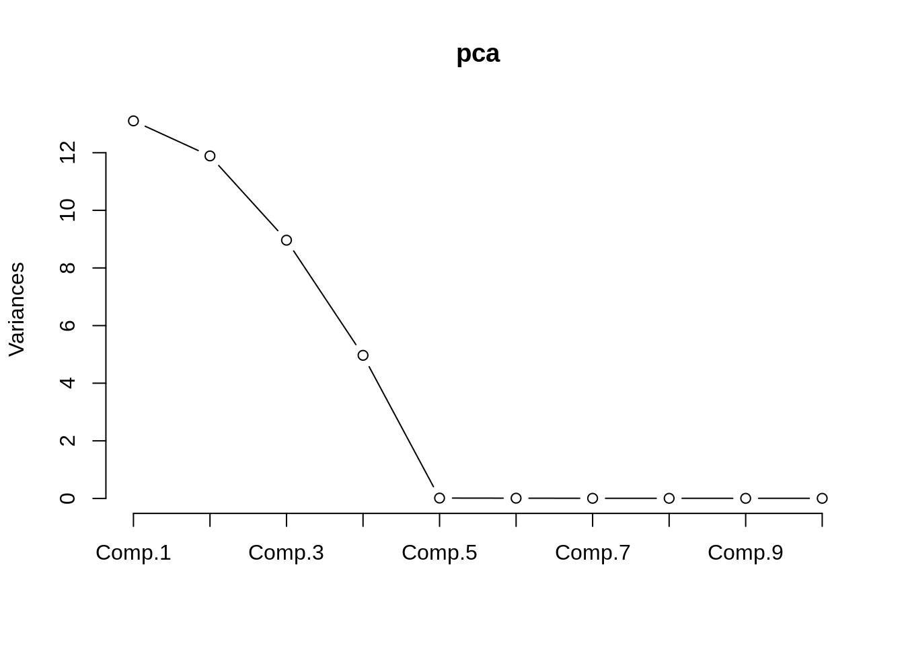
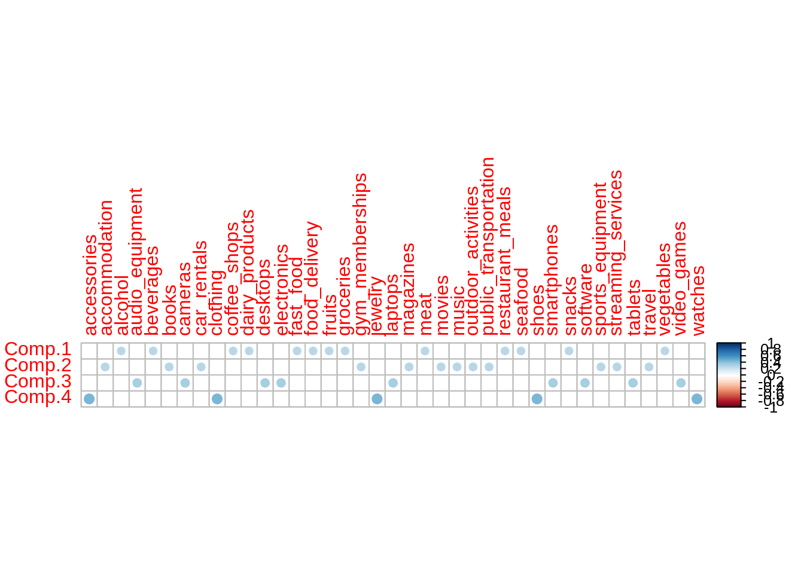

packages <- c(
"tibble",
"dplyr",
"readr",
"tidyr",
"purrr",
"broom",
"magrittr",
"corrplot",
"report",
"car"
)
# renv::install(packages)
sapply(packages, require, character.only=T)
Due: Wed, May 3, 2023 @ 11:59pm
Please read the instructions carefully before submitting your assignment.
- This assignment requires you to only upload a
PDFfile on Canvas - Don’t collapse any code cells before submitting.
- Remember to make sure all your code output is rendered properly before uploading your submission.
⚠️ Please add your name to the author information in the frontmatter before submitting your assignment ⚠️
In this assignment, we will perform various tasks involving principal component analysis (PCA), principal component regression, and dimensionality reduction.
We will need the following packages:
Question 1
70 points
Principal component anlaysis and variable selection
1.1 (5 points)
The data folder contains a spending.csv dataset which is an illustrative sample of monthly spending data for a group of \(5000\) people across a variety of categories. The response variable, income, is their monthly income, and objective is to predict the income for a an individual based on their spending patterns.
Read the data file as a tibble in R. Preprocess the data such that:
- the variables are of the right data type, e.g., categorical variables are encoded as factors
- all column names to lower case for consistency
- Any observations with missing values are dropped
path <- "data/spending.csv"
df <- read_csv(path) %>%
na.omit()Rows: 5000 Columns: 40
── Column specification ────────────────────────────────────────────────────────
Delimiter: ","
dbl (40): accessories, accommodation, alcohol, audio_equipment, beverages, b...
ℹ Use `spec()` to retrieve the full column specification for this data.
ℹ Specify the column types or set `show_col_types = FALSE` to quiet this message.df %>% head() %>% knitr::kable()| accessories | accommodation | alcohol | audio_equipment | beverages | books | cameras | car_rentals | clothing | coffee_shops | dairy_products | desktops | electronics | fast_food | food_delivery | fruits | groceries | gym_memberships | jewelry | laptops | magazines | meat | movies | music | outdoor_activities | public_transportation | restaurant_meals | seafood | shoes | smartphones | snacks | software | sports_equipment | streaming_services | tablets | travel | vegetables | video_games | watches | income |
|---|---|---|---|---|---|---|---|---|---|---|---|---|---|---|---|---|---|---|---|---|---|---|---|---|---|---|---|---|---|---|---|---|---|---|---|---|---|---|---|
| 4.45 | 90.09 | 39.20 | 7.60 | 57.90 | 45.14 | 6.62 | 67.66 | 8.69 | 41.03 | 99.54 | 5.14 | 12.84 | 78.76 | 60.18 | 79.71 | 121.61 | 66.91 | 3.35 | 9.78 | 44.92 | 100.24 | 68.92 | 67.81 | 67.68 | 67.13 | 80.35 | 80.70 | 5.93 | 12.56 | 61.28 | 5.85 | 45.47 | 90.42 | 9.11 | 90.93 | 79.30 | 11.92 | 3.37 | 198.79 |
| 10.92 | 84.86 | 28.69 | 44.30 | 43.88 | 42.29 | 27.53 | 63.80 | 16.93 | 27.65 | 70.37 | 27.41 | 72.29 | 56.23 | 42.28 | 56.40 | 84.83 | 61.63 | 6.61 | 44.35 | 41.50 | 69.12 | 62.35 | 63.18 | 61.77 | 63.62 | 56.65 | 57.41 | 14.58 | 57.26 | 41.70 | 30.70 | 40.71 | 81.92 | 45.05 | 83.09 | 56.76 | 58.56 | 5.97 | 423.35 |
| 5.77 | 18.50 | 37.53 | 13.38 | 57.34 | 8.65 | 7.13 | 15.04 | 7.69 | 37.85 | 96.32 | 7.74 | 22.36 | 75.76 | 55.09 | 77.01 | 113.12 | 14.91 | 4.17 | 14.43 | 7.99 | 95.81 | 13.65 | 16.13 | 13.78 | 13.97 | 76.06 | 76.24 | 6.59 | 16.94 | 58.07 | 8.41 | 10.16 | 18.51 | 15.71 | 17.35 | 76.93 | 19.30 | 4.64 | 154.83 |
| 15.05 | 77.77 | 33.34 | 100.67 | 51.88 | 40.58 | 65.89 | 59.22 | 24.67 | 32.74 | 83.55 | 64.86 | 164.36 | 67.17 | 50.78 | 66.08 | 99.00 | 57.91 | 10.65 | 99.06 | 40.70 | 83.55 | 58.97 | 58.44 | 59.01 | 58.39 | 65.76 | 66.20 | 19.82 | 131.39 | 50.91 | 66.74 | 39.40 | 78.12 | 97.49 | 77.90 | 67.35 | 131.61 | 9.93 | 799.07 |
| 26.94 | 12.49 | 10.10 | 82.35 | 14.55 | 6.87 | 55.79 | 6.75 | 42.70 | 8.62 | 24.49 | 53.66 | 135.44 | 18.71 | 14.01 | 19.20 | 27.67 | 8.23 | 16.94 | 80.06 | 4.70 | 21.07 | 9.85 | 9.10 | 9.68 | 8.35 | 19.36 | 17.70 | 36.33 | 109.54 | 14.87 | 52.77 | 6.17 | 11.99 | 80.76 | 12.31 | 18.75 | 108.84 | 16.95 | 617.97 |
| 4.49 | 25.72 | 29.54 | 93.76 | 42.22 | 12.67 | 60.65 | 19.82 | 7.61 | 27.29 | 68.21 | 60.22 | 153.65 | 56.14 | 40.43 | 54.29 | 80.86 | 19.78 | 3.35 | 92.67 | 14.50 | 68.51 | 19.66 | 21.93 | 21.02 | 19.52 | 53.74 | 54.17 | 6.13 | 125.08 | 41.71 | 64.04 | 12.38 | 26.11 | 93.33 | 26.23 | 53.79 | 123.86 | 3.73 | 680.76 |
1.2 (5 points)
Visualize the correlation between the variables using the corrplot() function. What do you observe? What does this mean for the model?
df %>%
keep(is.numeric) %>%
cor() %>%
corrplot()
1.3 (5 points)
Run a linear regression model to predict the income variable using the remaining predictors. Interpret the coefficients and summarize your results.
model1 <- lm(income ~ ., df)
model1 %>% summary()
Call:
lm(formula = income ~ ., data = df)
Residuals:
Min 1Q Median 3Q Max
-8.6875 -1.6569 0.0427 1.6633 9.5623
Coefficients:
Estimate Std. Error t value Pr(>|t|)
(Intercept) -0.077509 0.121730 -0.637 0.524330
accessories 0.299876 0.031786 9.434 < 2e-16 ***
accommodation 0.113632 0.031262 3.635 0.000281 ***
alcohol -0.005958 0.033266 -0.179 0.857873
audio_equipment 0.602004 0.033483 17.979 < 2e-16 ***
beverages 0.043335 0.034111 1.270 0.204000
books 0.070530 0.033238 2.122 0.033892 *
cameras 0.461827 0.033572 13.756 < 2e-16 ***
car_rentals 0.124875 0.032809 3.806 0.000143 ***
clothing 0.504228 0.026055 19.352 < 2e-16 ***
coffee_shops 0.048839 0.034909 1.399 0.161864
dairy_products 0.024548 0.032715 0.750 0.453082
desktops 0.391673 0.033393 11.729 < 2e-16 ***
electronics 1.079627 0.030035 35.946 < 2e-16 ***
fast_food 0.077531 0.033014 2.348 0.018893 *
food_delivery -0.004903 0.034257 -0.143 0.886188
fruits 0.059089 0.033321 1.773 0.076237 .
groceries 0.077694 0.031601 2.459 0.013981 *
gym_memberships 0.141168 0.033410 4.225 2.43e-05 ***
jewelry 0.213726 0.032834 6.509 8.30e-11 ***
laptops 0.594328 0.032548 18.260 < 2e-16 ***
magazines 0.080762 0.033694 2.397 0.016571 *
meat 0.081262 0.032367 2.511 0.012083 *
movies 0.110296 0.033326 3.310 0.000941 ***
music 0.159925 0.033398 4.788 1.73e-06 ***
outdoor_activities 0.087846 0.032356 2.715 0.006651 **
public_transportation 0.061138 0.033022 1.851 0.064169 .
restaurant_meals 0.066129 0.033225 1.990 0.046611 *
seafood 0.061318 0.033786 1.815 0.069596 .
shoes 0.463185 0.029613 15.641 < 2e-16 ***
smartphones 0.780150 0.031538 24.737 < 2e-16 ***
snacks 0.007464 0.033229 0.225 0.822290
software 0.408500 0.034102 11.979 < 2e-16 ***
sports_equipment 0.033328 0.033969 0.981 0.326574
streaming_services 0.150614 0.031902 4.721 2.41e-06 ***
tablets 0.637266 0.033133 19.234 < 2e-16 ***
travel 0.129161 0.031457 4.106 4.09e-05 ***
vegetables -0.066111 0.033162 -1.994 0.046257 *
video_games 0.863309 0.031392 27.501 < 2e-16 ***
watches 0.145853 0.033467 4.358 1.34e-05 ***
---
Signif. codes: 0 '***' 0.001 '**' 0.01 '*' 0.05 '.' 0.1 ' ' 1
Residual standard error: 2.434 on 4960 degrees of freedom
Multiple R-squared: 0.9999, Adjusted R-squared: 0.9999
F-statistic: 1.834e+06 on 39 and 4960 DF, p-value: < 2.2e-16For a given predictor, the coefficient represents the change in the response variable for a unit change in the predictor, holding all other predictors constant. For example, the coefficient for
groceriesis \(0.07\). This means that for a unit increase ingroceriesexpenditure, the expectedincomeincreases by \(0.07\), holding all other predictors constant.
1.3 (5 points)
Diagnose the model using the vif() function. What do you observe? What does this mean for the model?
model1 %>% vif() accessories accommodation alcohol
152.06821 681.15504 387.23376
audio_equipment beverages books
1755.56441 914.69186 192.91781
cameras car_rentals clothing
785.43147 423.55906 282.25143
coffee_shops dairy_products desktops
425.39644 2336.74847 776.75697
electronics fast_food food_delivery
3927.16511 1519.85171 921.68162
fruits groceries gym_memberships
1550.05678 3136.80325 438.30224
jewelry laptops magazines
72.38215 1658.76990 198.53619
meat movies music
2284.43676 437.28082 437.03990
outdoor_activities public_transportation restaurant_meals
411.17302 427.77815 1540.26240
seafood shoes smartphones
1594.08027 233.33301 2772.27822
snacks software sports_equipment
868.24282 810.28919 201.00255
streaming_services tablets travel
709.25592 1718.78339 690.69616
vegetables video_games watches
1536.40686 2745.64421 75.56457 The coefficients and their significance in
model1are not reliable because of the high multicollinearity between the predictors. This is evident from the high VIF values for the predictors.
1.4 (5 points)
Perform PCA using the princomp function in R. Print the summary of the PCA object.
pca <- df %>%
select(-income) %>%
princomp(cor = T)
summary(pca)Importance of components:
Comp.1 Comp.2 Comp.3 Comp.4 Comp.5
Standard deviation 3.6201099 3.4479976 2.9939875 2.2288727 0.1125697569
Proportion of Variance 0.3360307 0.3048381 0.2298452 0.1273814 0.0003249218
Cumulative Proportion 0.3360307 0.6408688 0.8707140 0.9980954 0.9984202743
Comp.6 Comp.7 Comp.8 Comp.9
Standard deviation 0.0960605322 0.0708312069 0.0691539249 0.0670242037
Proportion of Variance 0.0002366058 0.0001286426 0.0001226222 0.0001151857
Cumulative Proportion 0.9986568801 0.9987855227 0.9989081448 0.9990233306
Comp.10 Comp.11 Comp.12 Comp.13
Standard deviation 0.0653196274 5.099363e-02 0.0498072940 4.762347e-02
Proportion of Variance 0.0001094014 6.667565e-05 0.0000636094 5.815371e-05
Cumulative Proportion 0.9991327320 9.991994e-01 0.9992630170 9.993212e-01
Comp.14 Comp.15 Comp.16 Comp.17
Standard deviation 0.0469865879 4.611213e-02 0.0459026903 4.552808e-02
Proportion of Variance 0.0000566087 5.452125e-05 0.0000540271 5.314888e-05
Cumulative Proportion 0.9993777794 9.994323e-01 0.9994863278 9.995395e-01
Comp.18 Comp.19 Comp.20 Comp.21
Standard deviation 4.516751e-02 3.944038e-02 0.0358645643 3.505209e-02
Proportion of Variance 5.231037e-05 3.988573e-05 0.0000329812 3.150383e-05
Cumulative Proportion 9.995918e-01 9.996317e-01 0.9996646540 9.996962e-01
Comp.22 Comp.23 Comp.24 Comp.25
Standard deviation 3.460809e-02 3.435268e-02 3.297822e-02 3.240319e-02
Proportion of Variance 3.071076e-05 3.025915e-05 2.788623e-05 2.692223e-05
Cumulative Proportion 9.997269e-01 9.997571e-01 9.997850e-01 9.998119e-01
Comp.26 Comp.27 Comp.28 Comp.29
Standard deviation 3.135574e-02 2.976920e-02 2.508623e-02 2.460025e-02
Proportion of Variance 2.520981e-05 2.272321e-05 1.613638e-05 1.551723e-05
Cumulative Proportion 9.998371e-01 9.998599e-01 9.998760e-01 9.998915e-01
Comp.30 Comp.31 Comp.32 Comp.33
Standard deviation 2.426600e-02 2.374599e-02 2.334190e-02 2.283049e-02
Proportion of Variance 1.509843e-05 1.445825e-05 1.397036e-05 1.336491e-05
Cumulative Proportion 9.999066e-01 9.999211e-01 9.999350e-01 9.999484e-01
Comp.34 Comp.35 Comp.36 Comp.37
Standard deviation 2.119139e-02 1.968544e-02 1.937808e-02 1.742835e-02
Proportion of Variance 1.151475e-05 9.936319e-06 9.628464e-06 7.788395e-06
Cumulative Proportion 9.999599e-01 9.999699e-01 9.999795e-01 9.999873e-01
Comp.38 Comp.39
Standard deviation 1.677847e-02 1.464440e-02
Proportion of Variance 7.218385e-06 5.498931e-06
Cumulative Proportion 9.999945e-01 1.000000e+001.5 (5 points)
Make a screeplot of the proportion of variance explained by each principal component. How many principal components would you choose to keep? Why?
plot(pca, type="l")
I would choose to keep the first 4 principal components because they explain \(99.8\%\) of the variance and correspond to the “elbow” in the screeplot.
1.6 (5 points)
By setting any factor loadings below \(0.2\) to \(0\), summarize the factor loadings for the principal components that you chose to keep.
clean_loadings <- ifelse(
abs(pca$loadings[, 1:4]) < 0.1,
0,
round(pca$loadings[, 1:4], 2)
) %>%
as.data.frame()Visualize the factor loadings.
clean_loadings %>%
as.matrix() %>%
t() %>%
corrplot()
1.7 (15 points)
Based on the factor loadings, what do you think the principal components represent?
Provide an interpreation for each principal component you chose to keep.
By choosing 4 latent variables to explain \(99.8\%\) of the variance, we can interpret them as follows:
- Apparel and Accessories Spending:
This latent variable represents spending on clothing, shoes, accessories, jewelry, and watches.
- Technology Spending:
This latent variable captures spending on electronics, smartphones, tablets, laptops, desktops, audio equipment, cameras, video games, and software.
- Food and Beverage Spending:
This latent variable represents spending on groceries, meat, seafood, dairy products, fruits, vegetables, snacks, beverages, alcohol, fast food, restaurant meals, coffee shops, and food delivery.
- Entertainment and Travel Spending:
This latent variable captures spending on books, magazines, movies, music, streaming services, sports equipment, gym memberships, outdoor activities, travel, accommodation, car rentals, and public transportation.
1.8 (10 points)
Create a new data frame with the original response variable income and the principal components you chose to keep. Call this data frame df_pca.
df_pca <- predict(pca, df) %>%
as_tibble() %>%
select(1:4) %>%
mutate(income = df[["income"]])Fit a regression model to predict the income variable using the principal components you chose to keep. Interpret the coefficients and summarize your results.
model2 <- lm(income ~ . , df_pca)Compare the results of the regression model in 1.3 and 1.9. What do you observe? What does this mean for the model?
model2 %>% summary()
Call:
lm(formula = income ~ ., data = df_pca)
Residuals:
Min 1Q Median 3Q Max
-11.7419 -2.0122 0.0105 1.9804 14.5749
Coefficients:
Estimate Std. Error t value Pr(>|t|)
(Intercept) 628.17783 0.04135 15192.91 <2e-16 ***
Comp.1 13.33571 0.01142 1167.61 <2e-16 ***
Comp.2 -1.16303 0.01199 -96.99 <2e-16 ***
Comp.3 95.58547 0.01381 6921.50 <2e-16 ***
Comp.4 9.54163 0.01855 514.36 <2e-16 ***
---
Signif. codes: 0 '***' 0.001 '**' 0.01 '*' 0.05 '.' 0.1 ' ' 1
Residual standard error: 2.924 on 4995 degrees of freedom
Multiple R-squared: 0.9999, Adjusted R-squared: 0.9999
F-statistic: 1.239e+07 on 4 and 4995 DF, p-value: < 2.2e-16model2 %>% vif()Comp.1 Comp.2 Comp.3 Comp.4
1 1 1 1 1.10 (10 points)
Based on your interpretation of the principal components from Question 1.7, provide an interpretation of the regression model in Question 1.9.
The regression model in Q1.9 is a linear combination of the 4 latent variables we identified in Q1.7. The coefficients represent the change in the response variable for a unit change in the latent variable, holding all other latent variables constant. For example, the coefficient for
Comp.1is \(13.33\). This means that for a unit increase inApparel and Accessories spending, the expectedincomeincreases by \(13.33\), holding all other latent variables constant.
Session Information
Print your R session information using the following command
sessionInfo()R version 4.2.2 (2022-10-31)
Platform: x86_64-conda-linux-gnu (64-bit)
Running under: Storage
Matrix products: default
BLAS/LAPACK: /gpfs/group/hvt5139/default/tools/mambaforge/lib/libopenblasp-r0.3.21.so
locale:
[1] LC_CTYPE=en_US.UTF-8 LC_NUMERIC=C
[3] LC_TIME=en_US.UTF-8 LC_COLLATE=en_US.UTF-8
[5] LC_MONETARY=en_US.UTF-8 LC_MESSAGES=en_US.UTF-8
[7] LC_PAPER=en_US.UTF-8 LC_NAME=C
[9] LC_ADDRESS=C LC_TELEPHONE=C
[11] LC_MEASUREMENT=en_US.UTF-8 LC_IDENTIFICATION=C
attached base packages:
[1] stats graphics grDevices datasets utils methods base
other attached packages:
[1] report_0.5.7 car_3.1-1 carData_3.0-5 tibble_3.1.8
[5] luz_0.3.1 torch_0.9.0 e1071_1.7-13 rpart.plot_3.1.1
[9] rpart_4.1.19 caret_6.0-94 lattice_0.20-45 ggplot2_3.4.1
[13] corrplot_0.92 magrittr_2.0.3 broom_1.0.4 purrr_1.0.1
[17] tidyr_1.3.0 readr_2.1.4 dplyr_1.1.0
loaded via a namespace (and not attached):
[1] nlme_3.1-162 fs_1.6.1 lubridate_1.9.2
[4] bit64_4.0.5 insight_0.19.1 progress_1.2.2
[7] tools_4.2.2 backports_1.4.1 utf8_1.2.3
[10] R6_2.5.1 colorspace_2.1-0 nnet_7.3-18
[13] withr_2.5.0 tidyselect_1.2.0 prettyunits_1.1.1
[16] processx_3.8.0 bit_4.0.5 compiler_4.2.2
[19] cli_3.6.0 scales_1.2.1 callr_3.7.3
[22] proxy_0.4-27 stringr_1.5.0 digest_0.6.31
[25] rmarkdown_2.20 coro_1.0.3 pkgconfig_2.0.3
[28] htmltools_0.5.4 parallelly_1.35.0 fastmap_1.1.0
[31] htmlwidgets_1.6.2 rlang_1.0.6 generics_0.1.3
[34] jsonlite_1.8.4 ModelMetrics_1.2.2.2 Matrix_1.5-3
[37] Rcpp_1.0.10 munsell_0.5.0 fansi_1.0.4
[40] abind_1.4-5 lifecycle_1.0.3 stringi_1.7.12
[43] pROC_1.18.0 yaml_2.3.7 MASS_7.3-58.3
[46] plyr_1.8.8 recipes_1.0.5 grid_4.2.2
[49] parallel_4.2.2 listenv_0.9.0 crayon_1.5.2
[52] splines_4.2.2 hms_1.1.2 zeallot_0.1.0
[55] knitr_1.42 ps_1.7.2 pillar_1.8.1
[58] future.apply_1.10.0 reshape2_1.4.4 codetools_0.2-19
[61] stats4_4.2.2 glue_1.6.2 evaluate_0.20
[64] data.table_1.14.8 renv_0.16.0-53 vctrs_0.5.2
[67] tzdb_0.3.0 foreach_1.5.2 gtable_0.3.1
[70] future_1.32.0 xfun_0.37 gower_1.0.1
[73] prodlim_2019.11.13 class_7.3-21 survival_3.5-5
[76] timeDate_4022.108 iterators_1.0.14 hardhat_1.2.0
[79] lava_1.7.2.1 timechange_0.2.0 globals_0.16.2
[82] ellipsis_0.3.2 ipred_0.9-14